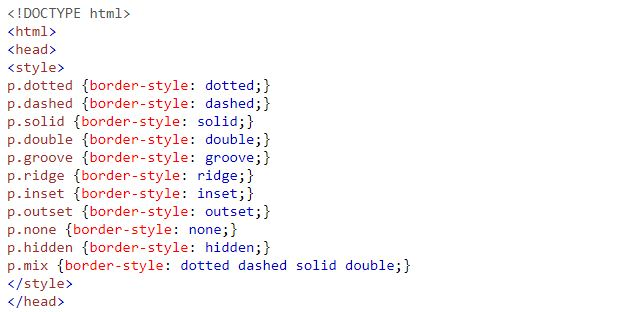
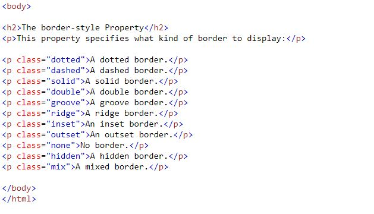

BORDAS
A border-stylepropriedade especifica o tipo de borda a ser exibido.
Os seguintes valores são permitidos:
- dotted - Define uma borda pontilhada
- dashed - Define uma borda tracejada
- solid - Define uma borda sólida
- double - Define uma fronteira dupla
- groove- Define uma borda com sulcos 3D. O efeito depende do valor da cor da borda
- ridge- Define uma borda 3D sulcada. O efeito depende do valor da cor da borda
- inset- Define uma borda inserida em 3D. O efeito depende do valor da cor da borda
- outset- Define uma borda de partida 3D. O efeito depende do valor da cor da borda
- none - não define fronteiras
- hidden - Define uma borda oculta
Observe como fica o cabeçalho:

Agora, observe como fica no corpo, os textos com bordas.
